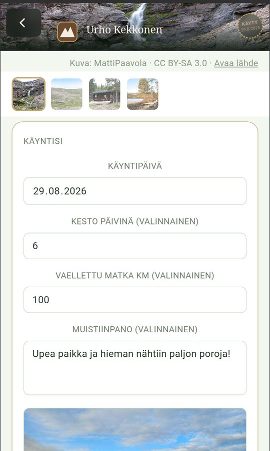
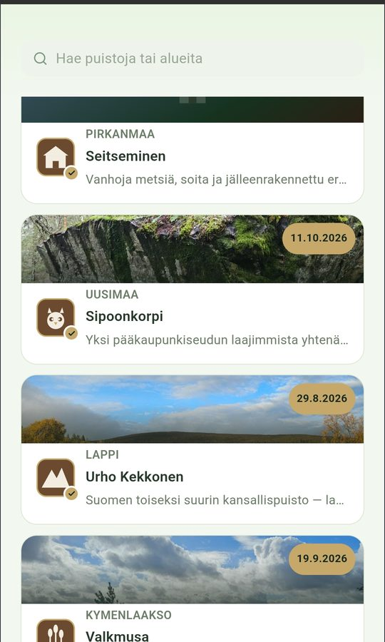
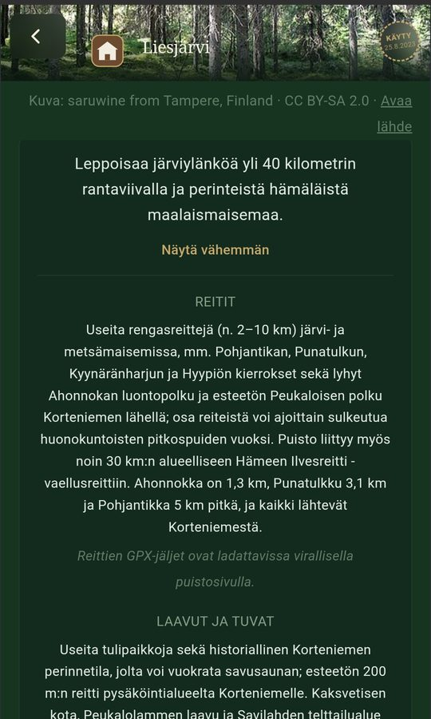
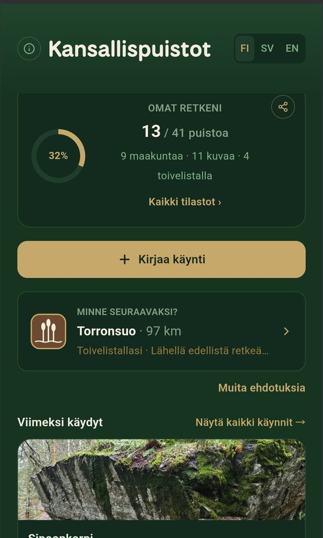

Suomen 41 kansallispuistoa taskussasi
All 41 Finnish national parks in your pocket
Kirjaa käyntisi, tallenna muistot kuvineen, katso reitit ja tuvat kartalta ja löydä seuraava retkikohde. Kaikki tiedot pysyvät omassa puhelimessasi.
Log your visits, keep your memories with photos, see trails and huts on the map and find your next trip. Everything stays on your own phone.
Lataa Google PlaystaGet it on Google Play- AndroidAndroid
- Suomi · svenska · EnglishFinnish · Swedish · English
- Ei mainoksiaNo ads
- Ei tiliä eikä seurantaaNo account, no tracking
Kaikki retkeilijän tarvitsema yhdessä paikassaEverything a hiker needs in one place
Kansallispuistot — retkeilijän lokikirja on retkeily- ja vaellussovellus kansallispuistoissa kulkeville – niin ensimmäistä puistoaan suunnittelevalle kuin kaikkia 41:tä keräävälle. Se toimii retkeilylokina, retkipäiväkirjana ja retkikarttana samassa sovelluksessa.A hiking app for people who explore Finland's national parks – whether you're planning your first park or collecting all 41. It works as a hiking log, trip journal and trail map in one.
Käyntipäiväkirja
Visit diary
Päivämäärä, kesto, kuljettu matka, muistiinpano ja oma kuva jokaisesta käynnistä – samaan puistoon voi palata yhä uudelleen.
Date, length of stay, distance, a note and your own photo for every visit – and you can return to the same park again and again.
Kartta ja reitit
Map and trails
Puistojen rajat, merkityt reitit, tuvat, laavut, tulipaikat, telttailualueet ja pysäköinti Maanmittauslaitoksen kartalla. Valitse itse, mitä näet.
Park boundaries, marked trails, huts, lean-tos, fire sites, camping areas and parking on National Land Survey maps. You choose what to show.
Mittaa ja tallenna omat reitit
Measure and save your own routes
Katso etäisyys omasta sijainnistasi, piirrä reitti kartalle ja tallenna se myöhempää varten.
See the distance from where you are, draw a route on the map and save it for later.
Saavutukset ja tilastot
Achievements and stats
Seuraa, kuinka monessa puistossa ja maakunnassa olet käynyt, ja avaa omat merkit – vuodenajoista norppapuistoihin.
Track how many parks and regions you've visited and unlock badges – from all four seasons to the seal parks.
Minne seuraavaksi?
Where to next?
Ehdotuksia seuraavaksi puistoksi toivelistasi, etäisyyden ja saavutustesi perusteella – sekä retkivinkit ja muistilista.
Suggestions for your next park based on your wishlist, distance and achievements – plus trip tips and a packing checklist.
Toimii myös maastossa
Works out on the trail
Puistojen tiedot, reitit ja retkeilypalvelut kulkevat sovelluksen mukana, ja aiemmin katsotut kartat näkyvät ilman verkkoyhteyttä.
Park information, trails and facilities are built in, and map areas you've already viewed work without a connection.
Kuvia sovelluksestaScreenshots




Tietosi pysyvät sinullaYour data stays with you
Sovellus ei kerää sinusta tietoja. Kehittäjä ei näe käyntejäsi, kuviasi eikä sijaintiasi.The app doesn't collect data about you. The developer never sees your visits, photos or location.
- Käynnit, muistiinpanot ja kuvat tallentuvat vain puhelimeesiVisits, notes and photos are stored only on your phone
- Sijaintia käytetään vain luvallasi, eikä sitä lähetetä minnekäänLocation is used only with your permission and never sent anywhere
- Ei käyttäjätiliä, mainoksia, analytiikkaa eikä seurantaaNo account, ads, analytics or tracking
- Varmuuskopioi tiedot itse tiedostoon ja siirrä uuteen puhelimeenBack up your data to a file yourself and move it to a new phone
Lähteet ja lisenssitSources and licences
Sovellus käyttää avointa dataa näistä lähteistä. Kiitos!The app uses open data from these sources. Thank you!
- Maanmittauslaitos
- Taustakartta ja maastokartta (CC BY 4.0)Background and topographic maps (CC BY 4.0)
- LIPAS – Jyväskylän yliopisto
- Puistojen rajat ja retkeilypalvelut (CC BY 4.0)Park boundaries and hiking facilities (CC BY 4.0)
- OpenStreetMap
- Merkityt reitit ja täydentävät retkeilypalvelut – © OpenStreetMap-tekijät (ODbL)Marked trails and additional facilities – © OpenStreetMap contributors (ODbL)
- Wikimedia Commons
- Puistojen kuvat; kunkin kuvan tekijä ja lisenssi näkyvät sovelluksessa kuvan allaPark photos; each photo's author and licence are shown under the photo in the app
- Metsähallitus / luontoon.fi
- Linkit puistojen virallisille sivuille ajantasaista tietoa vartenLinks to the official park pages for up-to-date information
Kansallispuistot — retkeilijän lokikirja on yksityisen kehittäjän sovellus, eikä se ole Metsähallituksen virallinen palvelu. Tarkista ajantasaiset tiedot, reittien kunto ja mahdolliset sulkemiset aina luontoon.fi-sivustolta.Kansallispuistot — retkeilijän lokikirja is an independent app and not an official service of Metsähallitus (Parks & Wildlife Finland). Always check current information, trail conditions and closures on luontoon.fi.